Saju Kaaju — Korean Saju Reading
A Korean Saju (사주팔자) web app that separates "calculating" from "telling" — a Python engine calculates from real KASI astronomical data, accurate to the minute, then Uncle Pae (AI) explains it in plain language, a reading that works as a mirror. Built with Next.js 15 + Supabase + Stripe · mobile-first · PWA
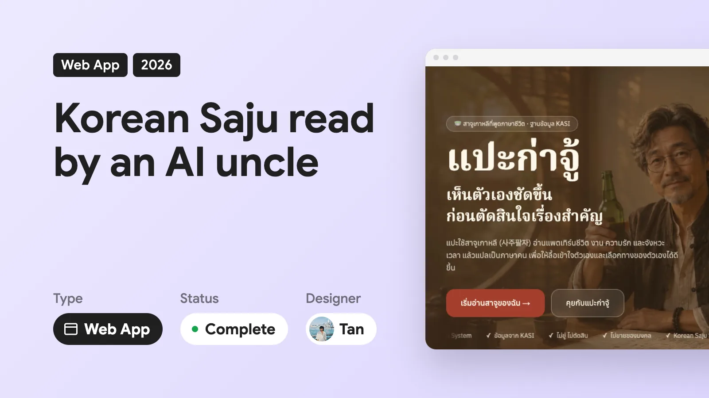
A Korean Saju (사주팔자) web app that separates "calculating" from "telling". A Python engine works out the four pillars from real Korean astronomical data (KASI), accurate to the minute, then Uncle Pae (AI) explains it in plain language. The reading is a mirror for seeing yourself, not a verdict, and it never sells fear.
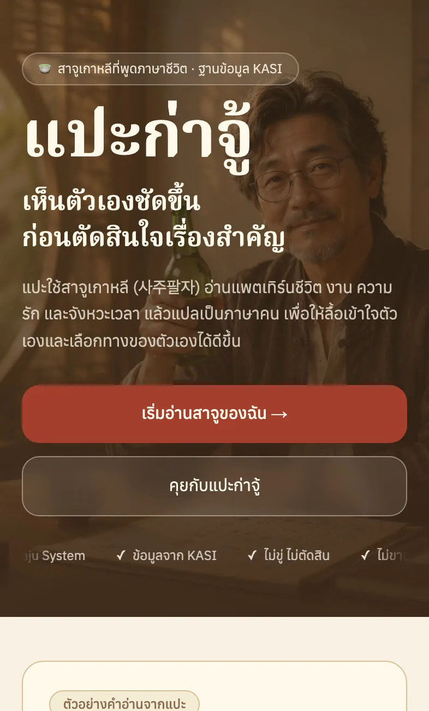
The problem
Why is it harder than it looks to make an online reading both accurate and warm?
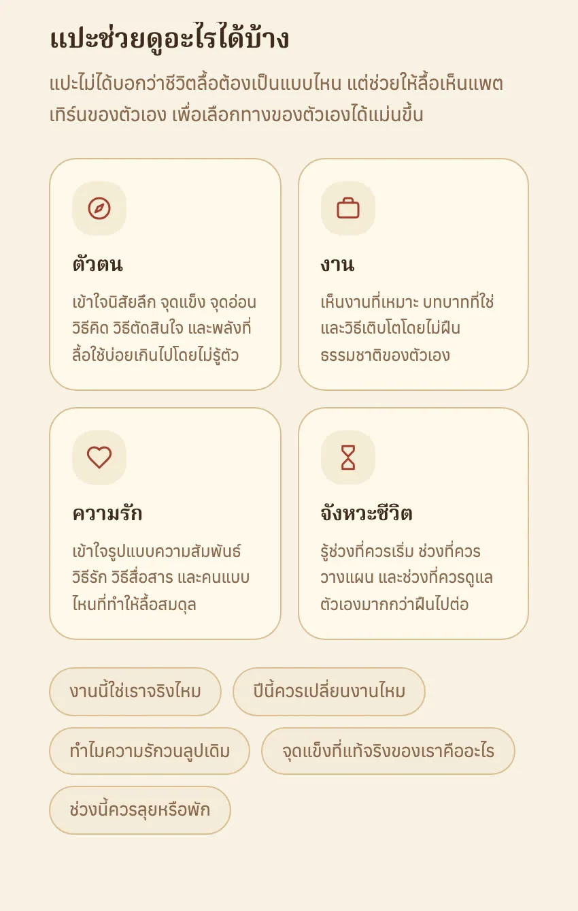
Korean Saju (四柱 — the four pillars of destiny) is hard to calculate. The year pillar depends on 입춘 (the start of spring), the month pillar on the 12 절기 (solar terms), and the hour pillar needs a 진태양시 (true solar time) correction by longitude, because Korean Standard Time is based on Japan's meridian (off by about 32 minutes). One minute off and a pillar changes, and the whole reading drifts. Let an AI do the math itself and it just makes the numbers up.
Most online readings give a fixed verdict and sell fear
They tell you this is definitely what will happen, then end with a lucky charm to buy. The listener is left with no choices, and it doesn't really help anyone understand themselves.
Calculating Korean Saju to the minute is very hard
You have to handle the 입춘/절기 boundaries, correct for 진태양시 by longitude, and split 야자시/조자시 (late and early midnight hours). One minute off and the day or hour pillar changes.
Letting the AI calculate the chart = made-up numbers
A language model is not an astronomical calculator. Ask it for the hour pillar and it guesses (hallucinates), confidently wrong. You can't trust it at all.
Terms like 오행 / 십신 / 격국 mean nothing to most people
The output of the system is all Hanja and Korean. Even if the math is right, if it isn't told in everyday language, people get nothing out of it.
It needs real auth, quotas and payments, with abuse protection
Not just a demo page: real login, a question quota that can't be edited on the client, and Stripe payments that top up the quota correctly and idempotently.
The solution
Separate the "fact calculator" from the "storyteller" — an accurate engine feeding an AI that speaks plainly
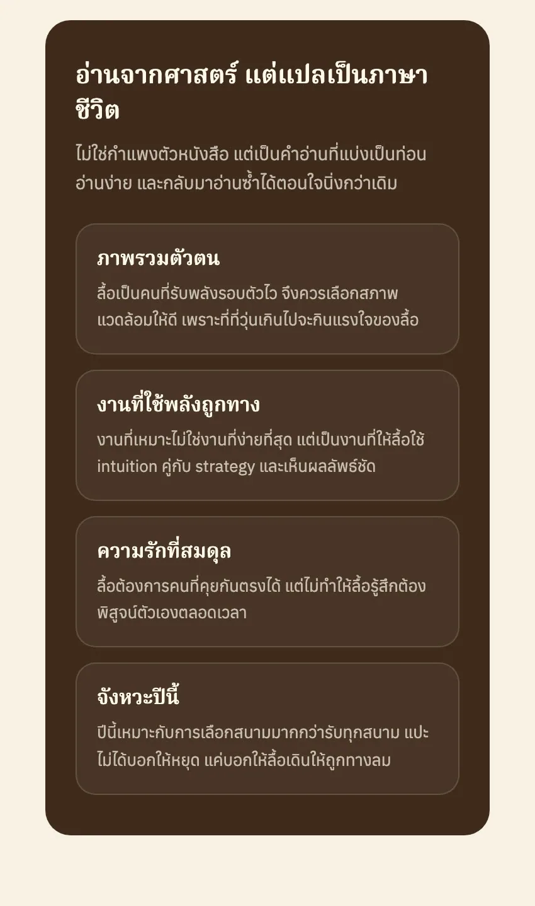
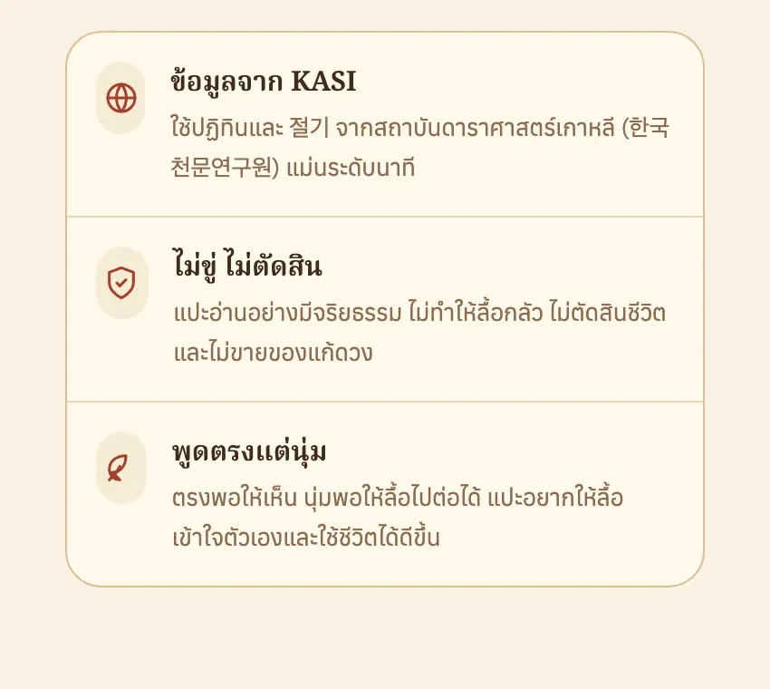
Separate "calculating" from "telling" — to prevent hallucination
The Python engine calculates the four pillars, 격국 (chart structure), 용신 (useful element) and forecasts as facts → the AI only "tells the story" and never touches the math, so the numbers can be trusted
"Uncle Pae" — a warm character voice that reads your chart like a mirror
The system prompt is the persona of a Korean uncle: direct but kind, no threats, no fixed verdicts, no lucky charms for sale — the listener always keeps their choices
A real Korean Saju calculator (KASI)
Uses the korean-saju engine with real KASI data built in, corrects 진태양시 by the longitude of the birth city, accurate to the minute, with a calendar through 2050
Personalized fortune calendar + daily cache
Daily and hourly forecasts based on each person's birth chart. They're deterministic, so they can be cached per user per day in the DB — reopening doesn't recalculate.
Quotas and payments handled on the server only
Quota is deducted by an atomic Postgres function, RLS is on for every table, and top-ups go through an idempotent Stripe webhook — the client can't change its own quota
How it works — 4 steps
From entering a birth date to Uncle Pae telling you your reading
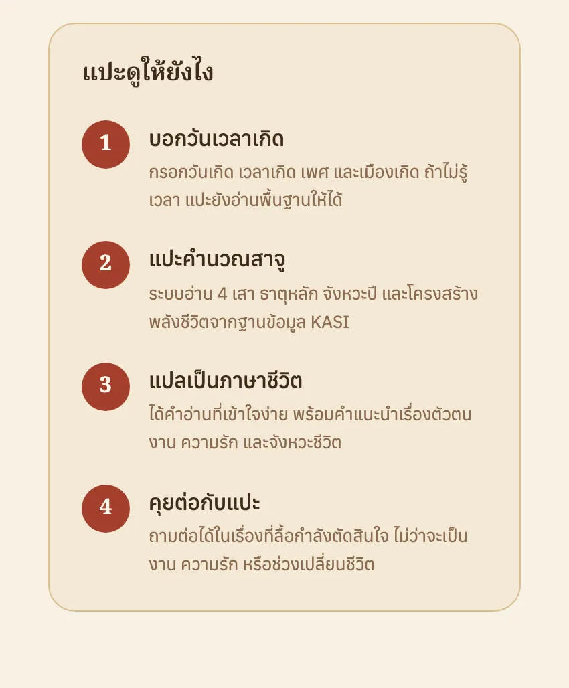
Enter birth details
Onboarding: date · time · birth city → longitude from the city list
Engine calculates
Python (KASI) calculates the four pillars + 격국/용신 → cached in the DB
Uncle Pae tells it
The AI takes the facts and tells them in plain language, streamed and grounded in the birth chart
Calendar + keep talking
Open the daily fortune calendar → keep chatting → run out of quota → top up THB 99
Tech Stack & Architecture
One Next.js app for everything (web + API) on Vercel · the Python engine as a serverless function · Supabase handles DB + Auth + RLS
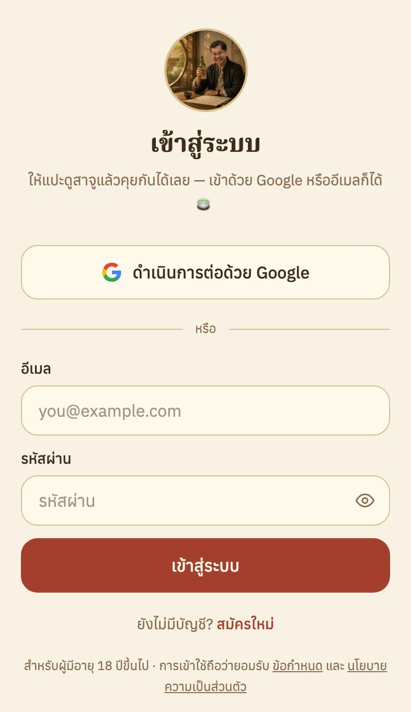
Next.js 15 App Router — web, API routes and the Python function in one deploy, sharing the session directly · Supabase covers Postgres + Google/Email Auth + merge-by-email + RLS in one service — fewer moving parts · Python on Vercel runs the korean-saju engine with 0 dependencies as is (astronomical math is Python's job) · Provider abstraction — switch AI (Gemini ↔ OpenAI ↔ Claude) in a single file without touching routes or UI
What I built — 8 core capabilities
The full loop, from entering a birth date to chatting with Uncle Pae and paying to top up the quota
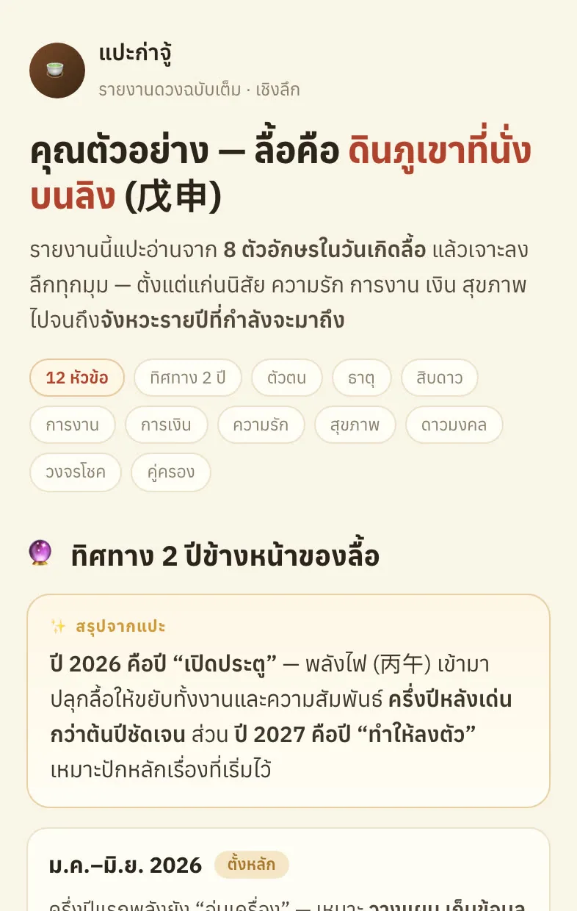
Chat with Uncle Pae
Streaming chat grounded in the birth chart — pin, rename, delete, new chat + starter prompts (overview / work / love / money)
Korean Saju Engine
Calculates the four pillars · 오행 (five elements) · 십신 (ten gods) · 격국 · 용신 · 대운/세운 (10-year and yearly luck) from real KASI data, with 진태양시 corrected by longitude
Personalized fortune calendar
Daily and hourly forecasts from the user's chart — highlights good and caution days, auspicious hours → deep-link to ask Uncle Pae about that day
Onboarding + element chart
Enter date · time · birth city (city picker → longitude) → build the Saju chart, showing the four pillars + element balance (오행 balance)
Multi-profile
Read for other people too — switch profiles (active profile), add someone new, each with their own Saju chart and chat room
Full report + Reveal
Generates a full reading report + a reveal page with a share card (html-to-image) and Uncle Pae reading it aloud (TTS)
Auth + atomic quota
Google + Email/Password (merge-by-email), quota deducted by an atomic Postgres function + append-only ledger + RLS
Payments + admin back office
Stripe consumable (THB 99 = 100 questions) topped up via an idempotent webhook + admin dashboard: customers / quota / revenue / cost
The look — chatting with Uncle Pae
Open the app → see your own element chart → talk to Uncle Pae right away, on one screen (mobile-first)
| Pillar | 時 Hour | 日 Day | 月 Month | 年 Year |
|---|---|---|---|---|
| Stem·Branch | 癸巳 | 丙寅 | 丙子 | 己巳 |
UI & Design System
Saju Kaaju from a product designer's view — the token system, real screens from the flow, and the reasoning behind each UX decision
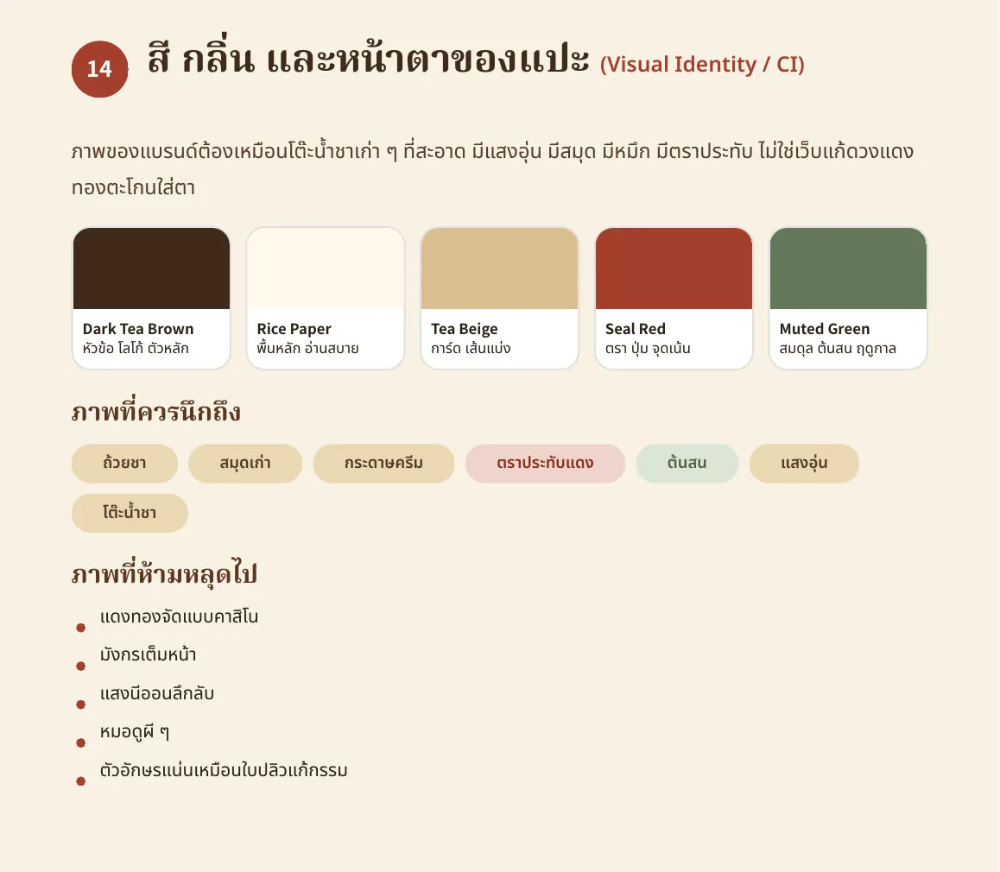
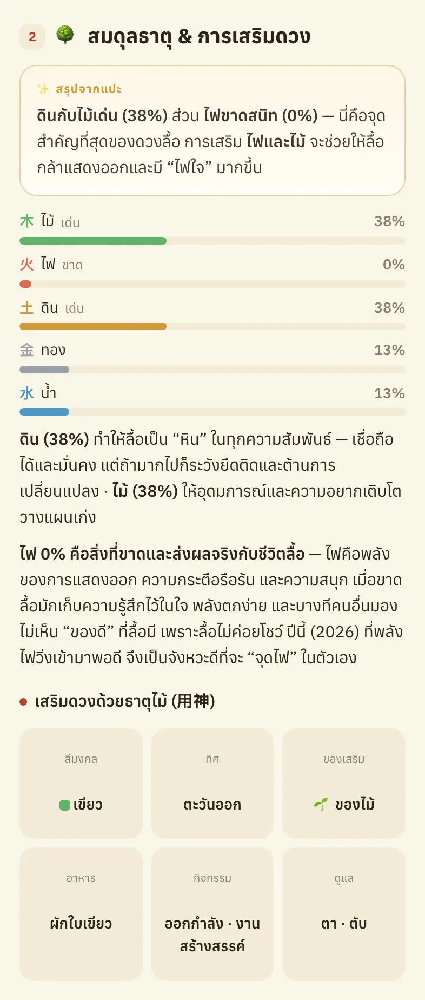
Mobile-first, letterboxed at 768px
Almost everyone visits Uncle Pae on a phone, so I designed for 393 first, then scaled to 768 → 1440
Why: on large screens the content is centered (capped at 768) instead of stretching into an empty layout — it keeps the calm "tea table" mood rather than forcing a desktop gridAn accessibility floor I wouldn't lower
Base font ≥ 16px, touch targets ≥ 44px, contrast ≥ 4.5:1 for all text and button colors
Why: the audience is broad and reads long passages on phones — small type or cramped buttons are a real barrier, not a nice-to-haveMicrocopy in "Uncle Pae's" voice
Loading = "Uncle Pae is brewing your reading, hang on a moment" · Error = "Aiyah, the system tripped a little. Try again."
Why: the states people find most frustrating (waiting, errors) are exactly where the character needs to show up — and users never feel blamed for a typoReadings as cards, not a wall of text
Terms like 오행/십신/격국 are mapped to plain language before display + long readings split into sections/cards + starter prompts
Why: however accurate the engine is, people won't read one huge block of text — visual hierarchy turns a deep subject into something easy to followHacking the problems
6 problems I had to solve myself — the precision of the Korean system, keeping the AI in check, and money that can't go wrong
Korean standard time follows Japan's meridian — the hour pillar drifts
KST is based on the 135° meridian (Japan), but Seoul sits at 126.98° — true solar time runs about 32 minutes behind. Use KST directly for the hour pillar and the pillar is wrong.
korean-saju engine, which corrects 진태양시 by the birth city's longitude + uses 절기/입춘 boundaries from KASI + splits 야자시/조자시 — verified 100% matching over 35,000 daysIf the AI calculates the chart, it makes up numbers
Language models answer chart numbers confidently but wrongly — you can't trust a reading built on bad numbers
Running a Korean engine (Python) alongside Next.js
The site is TypeScript/Next.js, but the calculation lives in a Python package — how do you run them on the same serverless setup?
/api/*.py) — inject korean_saju/src into sys.path; the package has 0 dependencies so it bundles easily; Next.js calls it via an internal fetch and caches the result in the DBPreventing quota abuse + race conditions when deducting
If the quota is deducted on the client, users can edit it; many simultaneous requests can deduct wrongly or go negative; and duplicate webhooks can top up twice
consume_question() deducts free/paid atomically in a single query + RLS lets only the service role write + an append-only quota_ledger + an idempotent Stripe webhook keyed on a unique stripe_session_idThe system speaks Hanja, and the AI has to be warm, not scary
Engine output is all 오행/십신/격국, which people can't read — and AI by default tends to give fixed verdicts or sound too formal, nothing like Uncle Pae
A month view = dozens of days of calculation, slow and costly
The month view of the calendar needs a forecast for every day. Calling Python again every time it opens is both slow and wasteful.
daily_forecast_cache table — the calendar checks the cache first and only calls the engine on a miss, then stores the resultDeliberate design decisions
What I chose "not to do" matters as much as what I did
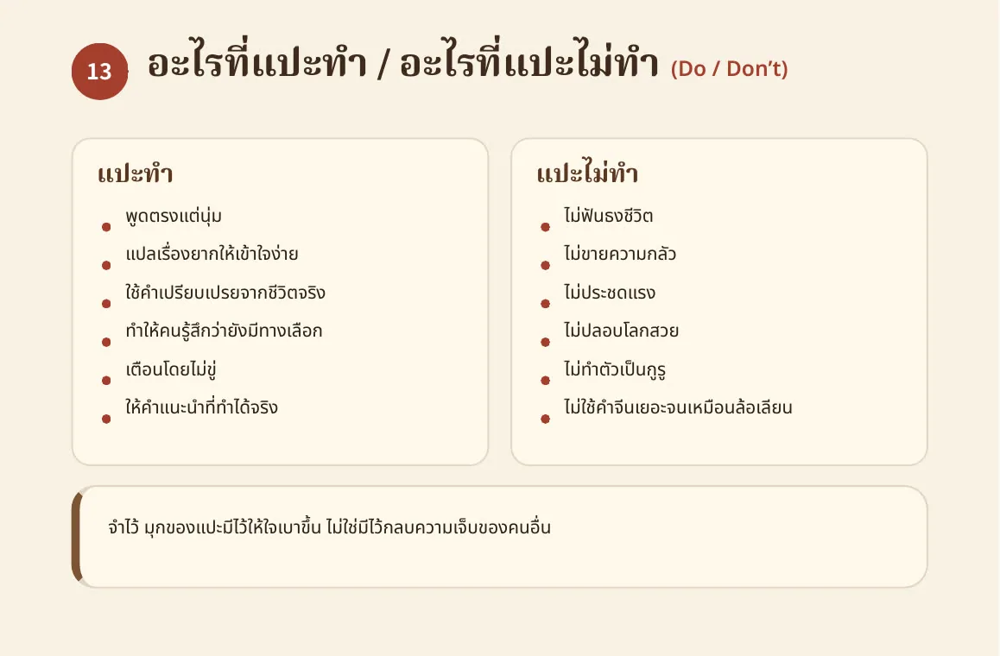
Saju Kaaju deliberately "reads the chart as a mirror, not a fixed fate" — no lucky charms, no selling fear, the listener always keeps their choices · the engine calculates and the AI tells (split roles to prevent hallucination) · mobile-first, capped at 768px and centered, no forced desktop layout · quota is a consumable, no subscription lock-in · a disclaimer + 18+ gate. Clear boundaries from the start = a straight implementation that's easy to maintain
A reading like a mirror
It reflects you back — no fixed verdicts, no selling fear
Engine calculates · AI tells
A strict split of roles so the AI can't make up numbers
Mobile-first ≤768
Centered on screen (letterbox), no forced desktop layout
THB 99 consumable
One top-up, no expiry, no subscription
Knowledge domains that got stronger
5 areas where my level genuinely moved up through this project
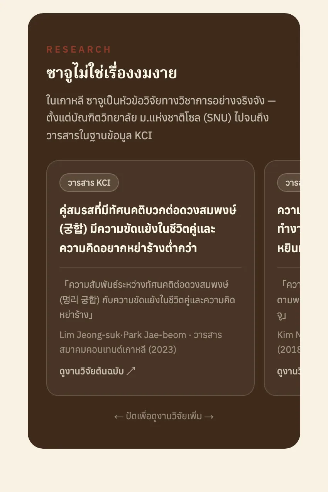
I learned the four pillars (연·월·일·시), 오행 (five elements), 십신 (ten gods), 격국 (chart structure), 용신 (useful element), 대운/세운 (10-year and yearly luck), and the astronomy behind them (진태양시, 절기, 입춘 boundaries) — deep enough to turn into a data model and UX. Lesson: real domain depth is what makes a product trustworthy, not just a pretty UI.
Built with the App Router (RSC), Supabase Auth (Google + Email/Password + merge-by-email), RLS on every table, and quota deducted by an atomic Postgres function. Lesson: one Supabase project can own the DB, auth and security surface — fewer moving parts lets a small team ship fast.
Connected the Python engine (korean-saju, 0 dependencies) to Next.js through a Vercel Python function + sys.path injection, then cached results in the DB. Lesson: pick the language that fits the job — astronomical math belongs in Python; no need to force a rewrite in TS.
Built a provider layer that switches Gemini → OpenAI → template fallback in one file, with streaming, prompt caching, and hallucination control by injecting facts from the engine + a character/system prompt. Lesson: steer AI with "boundaries + facts", never let it do its own math.
Designed a Stripe consumable + idempotent webhook + append-only quota_ledger + a price snapshot at purchase time (later price changes don't affect past history). Lesson: anything involving money must be atomic, server-only and idempotent — no exceptions.